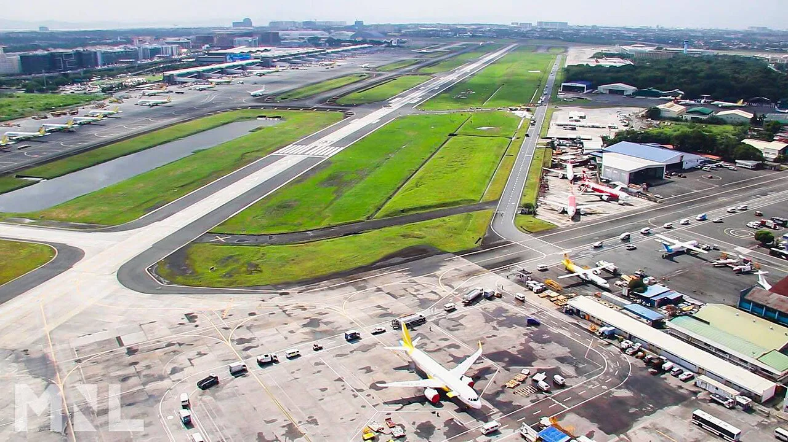
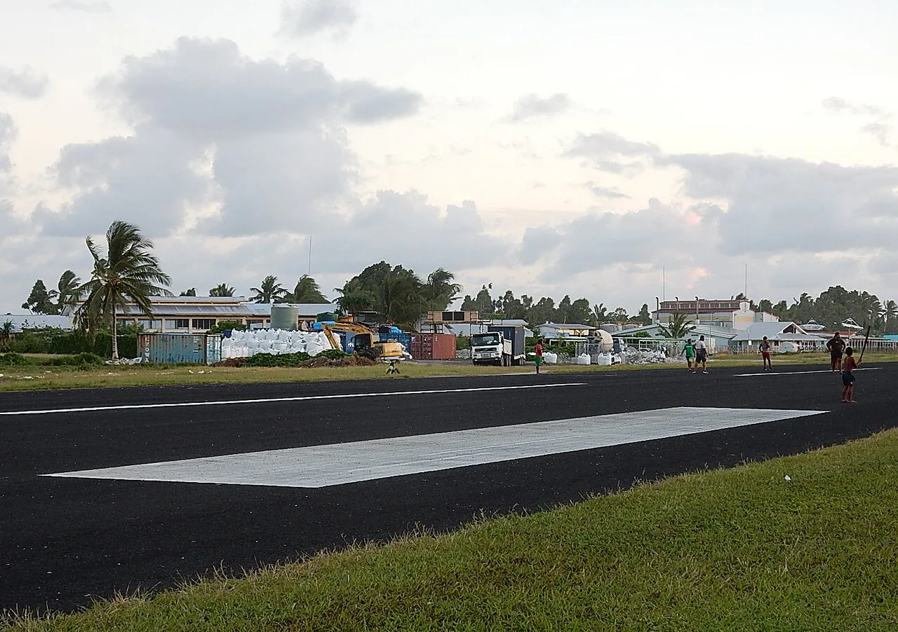
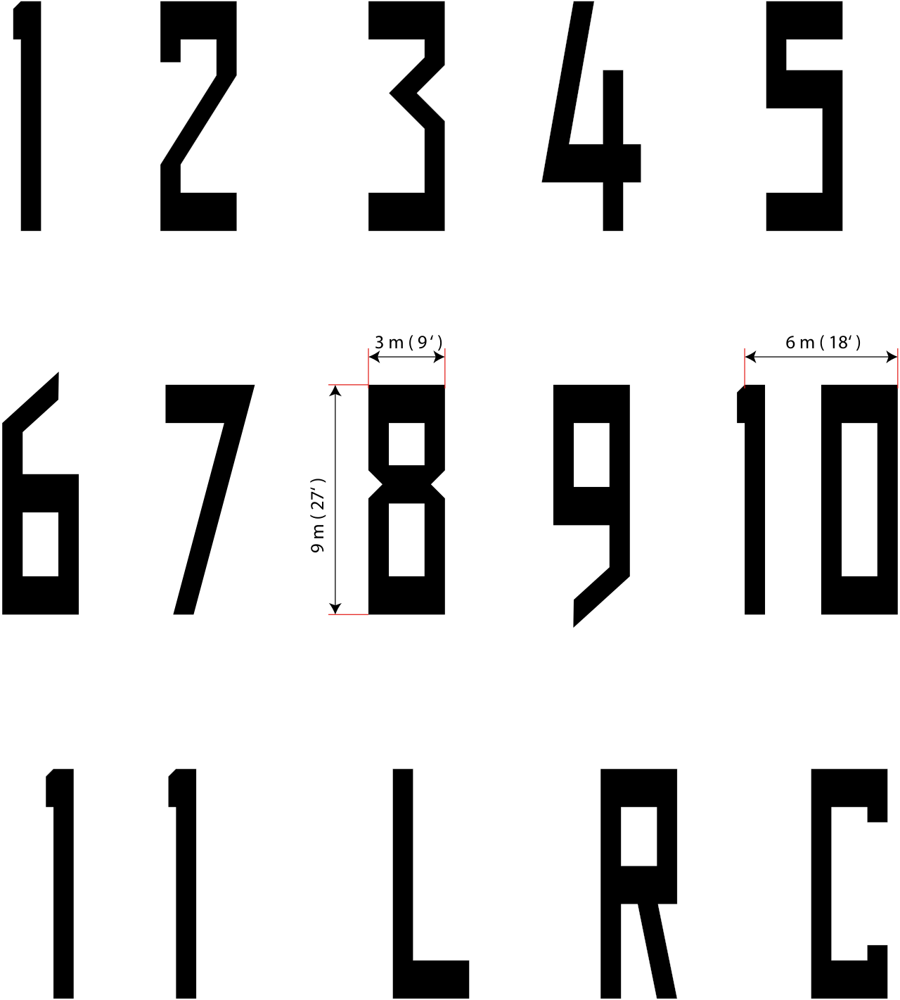

A runway number is a heading
Runway numbers are based on magnetic direction. If an aircraft is landing roughly toward 270 degrees on a compass, the runway end is marked 27. If it is landing the opposite way, roughly toward 90 degrees, that same strip of pavement has the opposite end marked 09. The number is the runway's magnetic heading rounded to the nearest ten degrees and shortened to two digits.
That is why a runway can appear to have two identities. Runway 09 and runway 27 may be the same physical pavement used from opposite directions. The label is not naming the concrete. It is naming the direction of use.

Why the system matters
Aviation needs short, unambiguous signals. Pilots, controllers, charts, lights, and painted markings all need to agree on direction. A number on pavement turns abstract heading information into something visible during approach, taxi, training, and emergency communication.
The system also helps explain why runway names sometimes change. Earth's magnetic field drifts over time. If a runway's magnetic alignment shifts enough relative to the numbering rule, the painted number may be updated. To a passenger, this can look like an airport renamed a road. To aviation, it is the maintenance of a directional language.

Letters solve parallel runways
Large airports often have parallel runways with similar headings. In that case, letters are added: L for left, C for center, and R for right. A pilot cleared for 27L is not being given a decorative suffix. The letter separates one physical runway from another when several share the same direction.
This is the small WeirdWeek lesson: a marking can look like a simple label while doing several jobs at once. It compresses heading, approach direction, airport layout, and radio clarity into two digits and sometimes one letter.
The useful lesson
Runway numbers are a good example of infrastructure that becomes invisible because it is standardized. The design is not flashy. It is repeatable, teachable, and resistant to confusion. That is exactly why it works. A number large enough to see from an aircraft is also a piece of shared language between ground, cockpit, chart, and controller.
Why runway 36 exists but runway 00 does not
Headings run around the compass. A runway aligned close to magnetic north is designated 36, representing 360 degrees, while one aligned close to south is 18. The system avoids 00 and keeps each end in the familiar two-digit runway vocabulary.
The opposite ends normally differ by 18 because they point approximately 180 degrees apart. That relationship gives a reader a quick check: if one end is 09, the other should be 27. The physical pavement stays still; the operational identity changes with direction.

Wind decides which number becomes active
Aircraft generally benefit from taking off and landing into the wind. Airports therefore select runway directions according to wind, traffic, equipment, noise procedures, and operational constraints. The painted number helps everyone refer to the currently used direction without inventing a new description.
This is why passengers may taxi past one number and later depart using another on a different day. The airport has not renamed the runway. Operations have selected the end that fits current conditions.
When magnetic drift forces a repaint
Runway designations are tied to magnetic direction, and Earth's magnetic field changes. When the rounded heading crosses the threshold for another designation, airports may need to update pavement markings, signs, charts, databases, procedures, and pilot information together.
A repaint therefore reveals the size of the system behind two digits. The number belongs simultaneously to concrete, radio language, maps, software, training, and regulation. Changing it is a coordinated data migration with paint at the visible edge.
Parallel runways create another naming problem
Left, center, and right work when two or three parallel runways share a heading. Airports with more parallel pavement may offset the numerical designations used by one pair even when the physical headings are close. The goal is operational distinction, not a perfect label for geometry.
That tradeoff is the heart of good infrastructure language: accuracy matters, but unambiguous use matters more. A runway name is successful when pilots, controllers, signs, and charts all point to the same place.